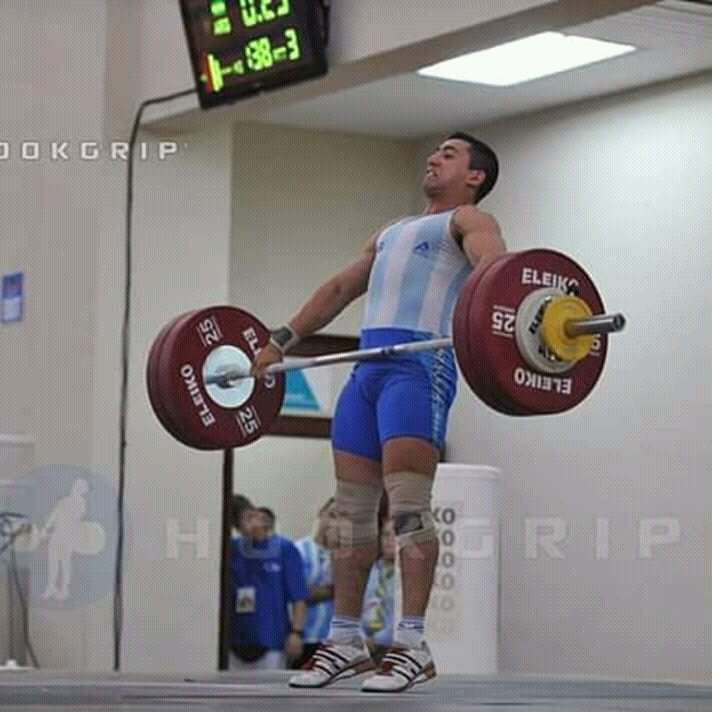
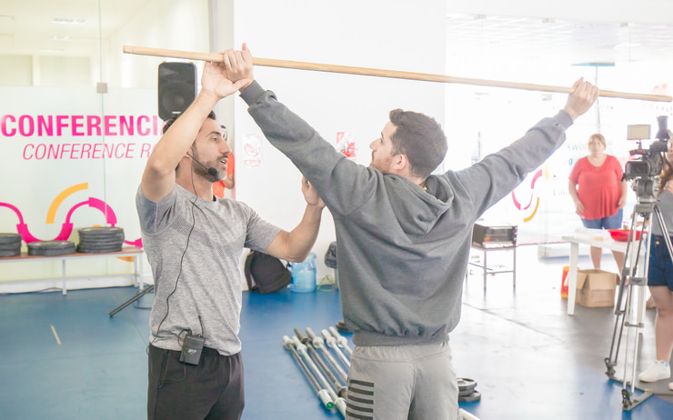
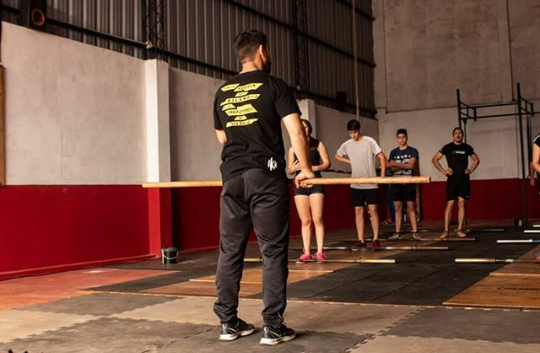

0
Medallas internacionales
34 Oro
11 Plata
1 Bronce
Planificación y corrección técnica de levantamiento olímpico para atletas de CrossFit en Argentina. Enfoque firme, claro y aplicable: mejor técnica, más control, más kilos.

Sí, funciona, porque no entrenás solo.
A distancia no significa “a ciegas”. Empezamos con diagnóstico por video y objetivos reales, y a partir de ahí te acompaño con correcciones claras y seguimiento. Cada ajuste se hace según lo que pasa en tu entrenamiento: lo que sale, lo que no sale y cómo responde tu cuerpo al trabajo.
No es magia ni motivación vacía: es método, criterio y consistencia aplicados al levantamiento olímpico dentro del contexto real del entrenamiento.
El proceso empieza con un diagnóstico técnico real. Analizamos tus levantamientos para identificar qué está limitando tu progreso y priorizamos 1–3 puntos clave para corregir primero.
A partir del diagnóstico construimos una planificación adaptada a tu nivel, tus días reales y tu box.
Te marco pocos puntos clave para que realmente los puedas aplicar en la siguiente sesión.
Revisamos tu respuesta real (videos + sensaciones) y ajustamos para seguir progresando sin improvisar.

Análisis completo de tus levantamientos (prioridades claras y plan de acción).
Estructura semanal con progresión (carga + foco técnico + accesorios).
Cues claros + ajustes por bloque para que lo puedas ejecutar en la próxima sesión.
Revisiones periódicas + ajustes según tu respuesta real y tus objetivos.
Comentarios reales de entrenamiento. Pasá el mouse para frenar el carrusel y enfocá una tarjeta.
Oro
56kg · 62kg · 69kg · 77kg · 85kg

“En 3 semanas destrabé la recepción. Ahora tengo cues claros y consistencia.”

“Lo mejor fue el seguimiento: cada ajuste tenía sentido. Mejor técnica y más control.”

“Me ordenó la planificación. Dejé de improvisar y empecé a progresar semana a semana.”

“Las correcciones son simples y aplicables. Cambiamos poco, pero lo importante.”

“A distancia no me sentí solo: mandaba videos y tenía respuesta con criterio.”

“Mejoré estabilidad y timing. Se nota que hay método atrás.”
Más de 20 años dentro del levantamiento olímpico de pesas, primero como atleta de alto rendimiento y luego como entrenador y capacitador en todo el país.
34 medallas de oro, 11 de plata y 1 de bronce a nivel internacional.
Entrenador de levantamiento olímpico aplicado a CrossFit y preparación física. Trabajo técnico con atletas y boxes de todo el país.
Además de capacitaciones dictadas en boxes y gimnasios en diferentes provincias de Argentina.
Capacitaciones para staff y atletas. Seminarios técnicos y mejoras de nivel de halterofilia del box.
Definimos formato, duración, nivel del grupo y objetivos. Presencial o mixto según zona.

Publicaciones propias y recomendaciones comentadas. Todo queda archivado para que puedas volver cuando lo necesites.